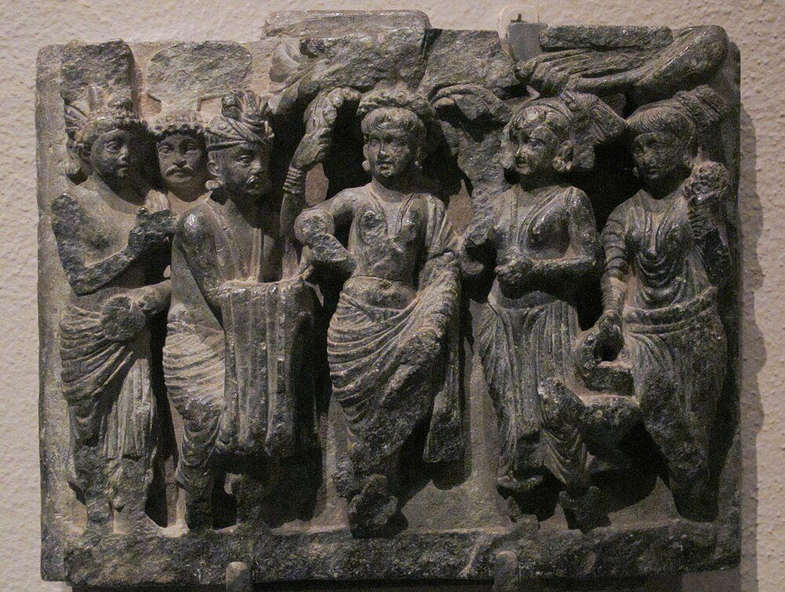
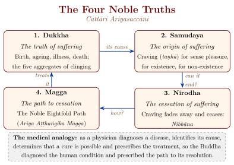
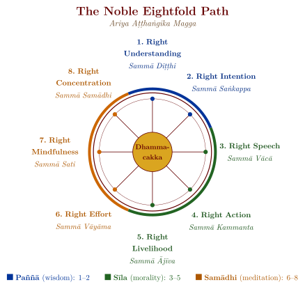
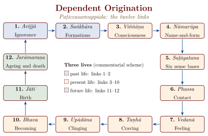

Chapter 2: The Life and Teachings of the Buddha¶
2.1 The Historical Context¶
Siddhārtha Gautama, who would become the Buddha (the “Awakened One”), was born into the Śākya clan at Lumbinī (in present-day Nepal), probably in the fifth century BCE. The story of his path from a sheltered youth through renunciation and ascetic striving to the Middle Way and awakening has been retold, painted and sculpted across Asia for more than two thousand years.
The Buddha’s dates are uncertain; this volume follows the “short chronology” and places his life at c. 480–400 BCE, for the reasons given in Chapter 1 (Section 1.7). Whatever the exact dates, there is no serious doubt that the Buddha was a historical teacher of the middle Ganges valley. Most details of his biography, however, come from texts compiled long after his death, and the full life-story — from birth to final passing — was assembled only gradually in later works such as the Lalitavistara, the Buddhacarita of Aśvaghoṣa and the Pāli Nidānakathā (Gethin 1998). What can be recovered of the teaching itself is best read against its setting: Richard Gombrich has argued that many of the Buddha’s central ideas, among them his redefinition of karma as intention, were deliberate responses to the Brahmanical thought of his day (Gombrich 2009).
2.1.1 Birth and Early Life¶
According to the Pāli sources, Siddhārtha was born to King Śuddhodana and Queen Mahāmāyā of the Śākya republic, whose capital was at Kapilavastu. The traditional accounts describe his miraculous birth in the Lumbinī grove (Figure 2.1), the prophecy of the sage Asita that the child would become either a great emperor (Cakravartin) or a great spiritual teacher (Buddha), and the subsequent efforts of his father to shield him from all knowledge of human suffering. Tradition also attributes to the newborn child a “lion’s roar” proclaiming that this would be his last birth:
Aggo ’ham asmi lokassa,
seṭṭho ’ham asmi lokassa,
jeṭṭho ’ham asmi lokassa.
Ayam antimā jāti,
na ’tthi dāni punabbhavo ti.
I am the foremost in the world, I am the best in the world, I am the eldest in the world. This is the last birth; there is now no more renewed existence.
— Majjhima Nikāya 123, Acchariyabbhutadhamma Sutta
The early discourses also contain verses in praise of the arising of Buddhas, such as the following:
Sukho buddhānaṃ uppādo,
sukhā saddhammadesanā;
sukhā saṅghassa sāmaggī,
samaggānaṃ tapo sukho.
Happy is the birth of Buddhas, happy is the teaching of the True Dhamma; happy is the harmony of the Saṅgha, happy is the austerity of those in harmony.
— Dhammapada 194


2.1.2 The Four Sights and the Great Departure¶
In the later biographies the prince, despite his father’s precautions, meets on successive excursions beyond the palace an old man, a sick man, a corpse and a wandering ascetic (samaṇa). The first three reveal the inevitability of ageing (jarā), disease (vyādhi) and death (maraṇa); the fourth shows that a life devoted to overcoming them is possible. The encounters shatter the illusion of a life insulated from suffering, and at the age of twenty-nine Siddhārtha leaves his palace, his wife Yaśodharā and his newborn son Rāhula in the Great Departure (Mahābhiniṣkramaṇa). The earliest accounts are much simpler. The canon mentions the young Gotama’s three palaces (AN 3.38) and describes his going forth plainly (MN 26), but it tells the story of the four sights only of a Buddha of the distant past, Vipassī (DN 14); its application to Siddhārtha, and the scene of the sleeping wife and son, belong to the later biographies.
According to tradition the quest lasted six years. Siddhārtha studied under two renowned teachers, Āḷāra Kālāma and Uddaka Rāmaputta, mastered their meditative attainments and found them insufficient. He then practised extreme austerities (duṣkaracaryā) that nearly destroyed his body, before concluding that neither indulgence nor self-mortification led to liberation. The “Middle Way” (majjhimā paṭipadā) between them became a name for the whole path he went on to teach.
2.2 The Enlightenment¶
According to tradition, on the full-moon night of Vaiśākha (April–May), seated beneath the Bodhi tree (Ficus religiosa) at Bodhgaya, Siddhārtha attained Samyaksambodhi — perfect, complete enlightenment. The Pāli texts describe three stages of his awakening during the three watches of the night (Table 2.1).
| Watch | Knowledge Gained | Description |
|---|---|---|
| First Watch | Pubbenivāsānussati-ñāṇa | Knowledge of his own previous births through countless aeons |
| Second Watch | Cutūpapāta-ñāṇa (Divine Eye) | Knowledge of the arising and passing away of all beings according to their karma |
| Third Watch | Āsavakkhaya-ñāṇa | Knowledge of the destruction of the āsavas (mental defilements), culminating in liberation |
With the dawn, Siddhārtha Gautama had become the Buddha. Traditions differ on his first words: the Vinaya and the Udāna give other verses, while the Pāli commentaries regard the following verses of the Dhammapada as his first utterance of triumph:
Anekajātisaṃsāraṃ
sandhāvissaṃ anibbisaṃ,
gahakārakaṃ gavesanto —
dukkhā jāti punappunaṃ.
Gahakāraka diṭṭho si!
Puna gehaṃ na kāhasi.
Sabbā ete phāsukā bhaggā,
gahakūṭaṃ visaṅkhitaṃ;
visaṅkhāragataṃ cittaṃ,
taṇhānaṃ khayam ajjhagā.
Through many a birth in saṃsāra have I wandered, seeking but not finding the house-builder. Sorrowful is repeated birth.
O house-builder, you are seen! You shall build no house again. All your rafters are broken, your ridgepole is destroyed; my mind has attained the unconditioned, achieved is the end of craving.
— Dhammapada 153–154
2.3 The Four Noble Truths (Ariya-Sacca)¶
The Buddha’s first discourse, the Dhammacakkappavattana Sutta (Setting in Motion the Wheel of the Dhamma), delivered at the Deer Park in Sarnath to his five former ascetic companions, laid out the foundational framework of his teaching: the Cattāri Ariyasaccāni (Four Noble Truths; Figure 2.2) (Bodhi 2000; Gethin 1998).
Idaṃ kho pana, bhikkhave, dukkhaṃ ariyasaccaṃ:
jāti pi dukkhā, jarā pi dukkhā, byādhi pi dukkho,
maraṇam pi dukkhaṃ, appiyehi sampayogo dukkho,
piyehi vippayogo dukkho,
yam p’ icchaṃ na labhati tam pi dukkhaṃ —
saṅkhittena pañc’ upādānakkhandhā dukkhā.
““Now this, monks, is the noble truth of suffering: birth is suffering, ageing is suffering, illness is suffering, death is suffering; association with the unpleasant is suffering, separation from the pleasant is suffering, not getting what one wishes is suffering — in brief, the five aggregates of clinging are suffering.””
— Saṃyutta Nikāya 56.11, trans. after Bodhi (2000)

2.3.1 Suffering, Its Origin, Its Cessation and the Path¶
The Pāli term dukkha is usually translated “suffering”, but its range is wider. The commentarial tradition distinguishes three levels: ordinary pain, physical and mental (dukkha-dukkha); the suffering inherent in change, since even pleasant experiences pass (vipariṇāma-dukkha); and the unsatisfactoriness of conditioned existence as such (saṅkhāra-dukkha), which is what the first sermon means when it says that “the five aggregates of clinging are suffering”. The claim is not that life contains no pleasure, but that nothing conditioned can be a lasting refuge.
The second truth names the origin of suffering as craving (taṇhā, literally “thirst”), which the sermon divides into three: craving for sense pleasures (kāma-taṇhā), for existence and becoming (bhava-taṇhā), and for non-existence (vibhava-taṇhā). The third category is philosophically significant: the wish for annihilation is treated as another form of grasping, not as a way out, which is one reason why the Buddhist goal cannot be identified with mere extinction. The third truth asserts that craving can be abandoned without remainder, and calls its cessation nibbāna (Sanskrit nirvāṇa) — described in the canon not as a place or a state of existence but as the unconditioned (asaṅkhata) and the deathless (amata). The fourth truth is the path that leads there.
2.4 The Noble Eightfold Path (Ariya Aṭṭhaṅgika Magga)¶
The Eightfold Path is traditionally represented as a wheel with eight spokes, the Dhamma-wheel that the Buddha set in motion at Sarnath. Its eight factors are not stages to be completed one after another but aspects of a single training, which the tradition groups under three heads (tividhā sikkhā): wisdom, morality and meditation (Figure 2.3 and Table 2.2). The order of the groups is instructive. Right view comes first because some understanding of the problem is needed to begin; morality supports the calm of meditation; and meditation in turn deepens the understanding with which the path began. The Dhammapada calls the eightfold path the best of paths (Dhp 273) and goes on:
Es’ eva maggo n’ atth’ añño
dassanassa visuddhiyā;
etaṃ hi tumhe paṭipajjatha,
mārass’ etaṃ pamohanaṃ.
This is the path, there is no other, for the purification of vision. Follow this path; it is the bewilderment of Māra.
— Dhammapada 274

| Group | No. | Factor (Pāli) | Description |
|---|---|---|---|
| Paññā | 1 | Sammā Diṭṭhi | Right Understanding: understanding the Four Noble Truths, the nature of karma and rebirth, and the three characteristics of existence |
| 2 | Sammā Saṅkappa | Right Intention: the resolve towards renunciation, goodwill, and harmlessness | |
| Sīla | 3 | Sammā Vācā | Right Speech: abstaining from lying, divisive speech, harsh speech, and idle chatter |
| 4 | Sammā Kammanta | Right Action: abstaining from killing, stealing, and sexual misconduct | |
| 5 | Sammā Ājīva | Right Livelihood: earning one’s living in ways that do not cause harm | |
| Samādhi | 6 | Sammā Vāyāma | Right Effort: the fourfold effort to prevent and abandon unwholesome states, and to develop and maintain wholesome states |
| 7 | Sammā Sati | Right Mindfulness: the fourfold establishment of mindfulness (body, feelings, mind, and dhammas) | |
| 8 | Sammā Samādhi | Right Concentration: the development of the four jhānas (meditative absorptions) |
2.5 The Middle Way (Majjhimā Paṭipadā)¶
The first sermon opens not with the four truths but with the Middle Way. Having lived in luxury as a prince and in self-mortification as an ascetic, the Buddha rejects both, and the rest of his teaching repeatedly applies the same move to philosophical questions — between the view that a person is an eternal self and the view that he is annihilated at death, for example.
Dve ’me, bhikkhave, antā pabbajitena na sevitabbā.
Katame dve?
Yo cāyaṃ kāmesu kāmasukhallikānuyogo
hīno gammo pothujjaniko anariyo anatthasaṃhito,
yo cāyaṃ attakilamathānuyogo
dukkho anariyo anatthasaṃhito.
Ete kho, bhikkhave, ubho ante anupagamma
majjhimā paṭipadā tathāgatena abhisambuddhā
cakkhukaraṇī ñāṇakaraṇī upasamāya
abhiññāya sambodhāya nibbānāya saṃvattati.
““Monks, these two extremes should not be practised by one who has gone forth. What two? That which is devoted to sensual pleasure — which is low, vulgar, ignoble, and unprofitable; and that which is devoted to self-mortification — which is painful, ignoble, and unprofitable. Avoiding both these extremes, the Middle Way realised by the Tathāgata produces vision, produces knowledge, and leads to calm, to direct knowledge, to enlightenment, to Nibbāna.””
— Dhammacakkappavattana Sutta, SN 56.11
2.6 Dependent Origination (Pratītyasamutpāda)¶
Dependent origination (pratītyasamutpāda, Pāli paṭiccasamuppāda) is the Buddha’s account of how suffering arises and how it can end. In its general form it states only that things arise in dependence on conditions and cease when the conditions cease. In its best-known application it analyses the process of suffering and rebirth as a chain of twelve links (nidāna; Figure 2.4), though the canon also gives shorter chains, and the division of the twelve links over three lives is a later commentarial interpretation (Gethin 1998; Siderits 2007). The teaching does important work in the system: it explains continuity from life to life without a permanent self that passes from one to the next, since each state is conditioned by the one before.
Imasmiṃ sati, idaṃ hoti;
imass’ uppādā, idaṃ uppajjati.
Imasmiṃ asati, idaṃ na hoti;
imassa nirodhā, idaṃ nirujjhati.
When this exists, that comes to be; with the arising of this, that arises. When this does not exist, that does not come to be; with the cessation of this, that ceases.
— Saṃyutta Nikāya 12.21; Majjhima Nikāya 115

2.7 The Three Characteristics of Existence (Tilakkhaṇa)¶
The three “marks” (tilakkhaṇa) are linked by an argument. Whatever is conditioned is impermanent (anicca), arising and passing away; what is impermanent cannot give lasting satisfaction and so is dukkha; and what is impermanent and unsatisfactory, and not under one’s control, cannot be the permanent self (attā) that the Brahmanical thinkers of the time sought. Hence all phenomena are non-self (anattā). The Dhammapada states the three insights in parallel verses, with a significant shift in the third: not only conditioned things (saṅkhārā) but all phenomena (dhammā), including the unconditioned, are without self.
Sabbe saṅkhārā aniccā ti,
yadā paññāya passati,
atha nibbindatī dukkhe —
esa maggo visuddhiyā.
Sabbe saṅkhārā dukkhā ti,
yadā paññāya passati,
atha nibbindatī dukkhe —
esa maggo visuddhiyā.
Sabbe dhammā anattā ti,
yadā paññāya passati,
atha nibbindatī dukkhe —
esa maggo visuddhiyā.
““All conditioned things are impermanent” — when one sees this with wisdom, one becomes disenchanted with suffering. This is the path to purification.
“All conditioned things are unsatisfactory” — when one sees this with wisdom, one becomes disenchanted with suffering. This is the path to purification.
“All phenomena are non-self” — when one sees this with wisdom, one becomes disenchanted with suffering. This is the path to purification.”
— Dhammapada 277–279
2.8 The Jātaka Tales and the Perfections¶
The Jātaka collection of the Pāli canon, comprising 547 stories of the Buddha’s previous births, is among the best-loved parts of the Pāli canon. These narratives trace the Bodhisatta’s (the future Buddha’s) cultivation of the perfections (pāramī) over countless lifetimes, in forms ranging from a king to a monkey, from an elephant to a quail. Strictly, only the verses are canonical; the prose stories are preserved in the later commentary (Jātakaṭṭhavaṇṇanā), and many draw on the common stock of Indian folk narrative (Norman 1983).
The stories served several purposes at once. They showed the perfections being built up over many lives, which made the Buddha’s final awakening the outcome of a long moral career rather than a sudden gift; they gave monks and lay people exemplars of conduct; and they supplied the narrative programme of much early Buddhist art, from the reliefs of Bharhut and Sanchi to the murals of Ajanta. The Theravāda tradition counts ten perfections, first listed in the late canonical Buddhavaṃsa and Cariyāpiṭaka: generosity (dāna), morality (sīla), renunciation (nekkhamma), wisdom (paññā), energy (viriya), patience (khanti), truthfulness (sacca), resolve (adhiṭṭhāna), loving-kindness (mettā) and equanimity (upekkhā). The commentaries associate each with one of the ten “great Jātakas” that close the collection (Table 2.3); the Mahāyāna counts six perfections, or ten in an expanded list (Chapter 5).
| No. | Name | Perfection | Summary |
|---|---|---|---|
| 538 | Mūgapakkha (Temiya) | Nekkhamma (renunciation) | A prince feigns dumbness and paralysis for years to avoid becoming king |
| 539 | Mahājanaka | Viriya (energy) | A prince shipwrecked at sea swims on for seven days without giving up |
| 540 | Sāma (Suvaṇṇasāma) | Mettā (loving-kindness) | A devoted son, shot by a king, bears no ill-will |
| 541 | Nimi | Adhiṭṭhāna (resolve) | A righteous king tours the heavens and hells and keeps his resolve |
| 542 | Khaṇḍahāla (Candakumāra) | Khanti (patience) | A prince endures being condemned to sacrifice |
| 543 | Bhūridatta | Sīla (virtue) | A nāga prince keeps his precepts though captured by a snake-charmer |
| 544 | Mahānāradakassapa | Upekkhā (equanimity) | A Brahmā frees a king from a false view |
| 545 | Vidhurapaṇḍita | Sacca (truthfulness) | A wise minister keeps his word at the risk of his life |
| 546 | Mahā-ummagga (Mahosadha) | Paññā (wisdom) | A brilliant counsellor defeats his rivals by wit |
| 547 | Vessantara | Dāna (generosity) | A prince gives away everything, even his wife and children |
The last of these, the Vessantara Jātaka, has been the most influential. Its story of a prince who gives away even his wife and children raised hard moral questions for its audiences, and it is still recited and performed at festivals across mainland Southeast Asia.
2.9 The Five Aggregates (Pañca Khandha)¶
The analysis of the person into five aggregates (pañca khandha) is the instrument by which the doctrine of non-self is argued. What we conventionally call a “person” is examined into material form, feeling, perception, volitional formations and consciousness (Table 2.4), and each is shown to be impermanent and beyond one’s control; no permanent self (attā) is found in any of them, singly or together.
| No. | Pāli | English | Description |
|---|---|---|---|
| 1 | Rūpa | Form/Matter | The physical body and material objects; the four great elements (earth, water, fire, air) and their derivatives |
| 2 | Vedanā | Feeling | The affective tone of experience: pleasant, unpleasant, or neutral |
| 3 | Saññā | Perception | Recognition, identification, and categorisation of objects |
| 4 | Saṅkhāra | Volitional formations | Mental dispositions, intentions, and karmic imprints; the aggregate that drives rebirth |
| 5 | Viññāṇa | Consciousness | Awareness of objects through the six sense doors (eye, ear, nose, tongue, body, mind) |
Rūpaṃ, bhikkhave, anattā.
Rūpañ ca h’ idaṃ, bhikkhave,
attā abhavissa,
nayidaṃ rūpaṃ ābādhāya saṃvatteyya,
labbhetha ca rūpe:
“Evaṃ me rūpaṃ hotu,
evaṃ me rūpaṃ mā ahosī” ti.
““Form, monks, is not-self. For if form were self, monks, then form would not lead to affliction, and one could have it of form: ‘Let my form be thus, let my form not be thus.’ ””
— Anattalakkhaṇa Sutta, SN 22.59
According to the Vinaya (Mahāvagga I.6), this discourse, the Anattalakkhaṇa Sutta (Discourse on the Characteristic of Non-Self), was the Buddha’s second sermon, delivered to the same five ascetics at the Deer Park, all of whom became arahants on hearing it. Its argument is simple and has remained central to Buddhist philosophy: if any aggregate were the self, one could command it, and since none can be commanded and all are impermanent, none is the self.
2.10 The Doctrine of Karma and Rebirth¶
The Buddhist understanding of karma (kamma) shares the general Indian idea that actions bear fruit in this and later lives, but it differs from both the Brahmanical and the Jain conceptions in where it locates the act.
Scholarly Note: Karma as Intention
The Buddhist doctrine of karma differs from the Jain doctrine in a crucial respect. For Jainism, karma is a subtle form of matter (pudgala) that physically adheres to the soul. For Buddhism, karma is fundamentally intentional action (cetanā). As the Buddha stated: “Cetanāhaṃ, bhikkhave, kammaṃ vadāmi” — “It is intention, monks, that I call karma” (Aṅguttara Nikāya 6.63). The consequence is that, for the Buddhist, the moral quality of an action resides in the intention behind it, not in the physical act alone; the Jains, as Chapter 8 shows, judged that unintended harm also binds karma.
The Buddhist theory of karma operates within the framework of Paṭiccasamuppāda (Dependent Origination). Karmic actions produce results (vipāka) not through any metaphysical substance but through the causal process of consciousness itself. Wholesome (kusala) actions — those rooted in non-greed, non-hatred, and non-delusion — produce pleasant results, while unwholesome (akusala) actions — those rooted in greed, hatred, and delusion — produce painful results.
Manasā ce paduṭṭhena
bhāsatī vā karoti vā,
tato naṃ dukkham anveti
cakkaṃ va vahato padaṃ.
Manasā ce pasannena
bhāsatī vā karoti vā,
tato naṃ sukham anveti
chāyā va anapāyinī.
““If one speaks or acts with a corrupted mind, then suffering follows one, as the wheel of the cart follows the foot of the ox. If one speaks or acts with a pure mind, then happiness follows one, like a shadow that never departs.””
— Dhammapada 1–2 (last four lines of each verse)
2.11 The Chief Disciples¶
The canon remembers the Buddha’s community through particular people. A chapter of the Aṅguttara Nikāya (AN 1.188–267) names the monks, nuns, laymen and laywomen who were “foremost” (etadagga) in some quality (Bodhi 2012). The list is formulaic, but it is revealing. The two chief disciples, Sāriputta and Moggallāna, were brāhmaṇas who had followed the sceptic Sañjaya; the authority on the Vinaya, Upāli, had been a barber; and the nuns and lay followers receive their own lists alongside the monks, so that the text presents the fourfold community as a whole (Table 2.5; the lay followers are discussed in Chapter 13, Section 13.4.1).
| Disciple | Eminence | Notes |
|---|---|---|
| Sāriputta | Foremost in wisdom | The Buddha’s right-hand disciple; regarded by Theravāda tradition as the first transmitter of the Abhidhamma |
| Moggallāna | Foremost in psychic powers | The Buddha’s left-hand disciple; renowned for supernormal abilities |
| Mahākassapa | Foremost in ascetic practices | Presided over the First Council at Rājagaha |
| Ānanda | Foremost as personal attendant | The Buddha’s cousin and devoted attendant; recited the Sutta Piṭaka at the First Council |
| Upāli | Foremost in Vinaya | Originally a barber; recited the Vinaya Piṭaka at the First Council |
| Mahāpajāpatī Gotamī | Foremost among nuns in seniority | The Buddha’s foster-mother; first woman ordained as a bhikkhunī |
| Khemā | Foremost in wisdom (nuns) | Former queen; attained Arahantship through insight into impermanence |
| Uppalavaṇṇā | Foremost in psychic powers (nuns) | Attained the highest supernormal powers among the nuns |
| Rāhula | Foremost in training | The Buddha’s own son; exemplar of monastic discipline |
| Subhūti | Foremost in dwelling without conflict | Later a key interlocutor in the Prajñāpāramitā literature of the Mahāyāna |
2.12 The Buddhist Ethics of Compassion¶
The ethics of the early texts is not only a matter of precepts. They also teach the cultivation of four attitudes, the “divine abodes” (brahmavihāra) or “boundless states” (appamaññā): loving-kindness (mettā), the wish that beings be happy; compassion (karuṇā), the wish that they be free from suffering; sympathetic joy (muditā) in the happiness of others; and equanimity (upekkhā), an impartiality that is not indifference. The name is itself an appropriation: the Buddha calls these states the way to companionship with Brahmā, reinterpreting the goal of the Brahmanical seeker in ethical terms.
Sukhino vā khemino hontu,
sabbe sattā bhavantu sukhitattā.
““May all beings be happy and secure; may all beings be happy at heart.””
— Mettā Sutta, Sutta Nipāta 145 (= Khuddakapāṭha 9)
The divine abodes are developed in meditation, but the texts present them as an orientation for the whole of life. The Mettā Sutta asks the practitioner to extend loving-kindness to all beings “whether seen or unseen, dwelling far or near, born or seeking birth” (Sn 147).
2.13 The Parinirvāṇa¶
According to tradition the Buddha taught for forty-five years, travelling across the Gangetic plains, establishing the Saṅgha (monastic community), and teaching beings from all walks of life. At the age of eighty, at Kuśinagara (Pāli Kusinārā, modern Kushinagar), he entered Parinirvāṇa — the final passing beyond the cycle of rebirth. The scene, the Buddha lying on his right side between twin sāla trees, became one of the standard subjects of Buddhist art; the colossal reclining image in Ajanta Cave 26 (5th century CE) is the best-known early Indian example.
His last words, as recorded in the Mahāparinibbāna Sutta (Walshe 1995), are:
Handa dāni, bhikkhave, āmantayāmi vo:
vayadhammā saṅkhārā,
appamādena sampādetha.
Now then, monks, I address you: conditioned things are of a nature to decay; strive on with diligence.
— Dīgha Nikāya 16.6.7, Mahāparinibbāna Sutta
2.14 The Saṅgha: Foundation of the Buddhist Community¶
The establishment of the Saṅgha (monastic community) is one of the Buddha’s most consequential institutional innovations. The Saṅgha provided the organisational framework within which the Dhamma could be practised, preserved, and transmitted across generations. The Buddha established a fourfold community (catu-parisa): monks (bhikkhus), nuns (bhikkhunīs), male lay followers (upāsakas), and female lay followers (upāsikās).
2.14.1 The Vinaya and Communal Governance¶
The Vinaya Piṭaka records the rules and procedures governing monastic life. Formal acts of the Saṅgha (saṅghakamma) were carried out by the monks resident within a boundary (sīmā), using fixed formulas (kammavācā) with a motion followed by one or three announcements; silence signified consent. Most acts required the agreement of all qualified monks present, but some disputes could be settled by a majority vote taken with voting-sticks (yebhuyyasikā). Disputes were settled by seven prescribed procedures (adhikaraṇa-samatha), among them settlement in the presence of the parties, majority vote and the “covering over with grass” of mutual offences. Rank within the community was fixed by seniority of ordination rather than by birth, caste or wealth; monastic property belonged to the Saṅgha as a whole rather than to individuals; and each newly ordained monk was placed for training under a preceptor (upajjhāya). These arrangements have often been compared with the assemblies of the republican clans (gaṇa, saṅgha) of the Buddha’s time, from which the word saṅgha itself was borrowed (Dutt 1962; Gethin 1998). How they worked in the life of a monk is described in Chapter 13.
Nineteenth-century scholars such as T. W. Rhys Davids admired these procedures as an early example of self-government. The comparison should not be pressed too far: the Saṅgha was a community of renunciants bound by a fixed code, not a representative assembly, and authority also rested on seniority and the teacher–pupil relationship.
2.14.2 The Order of Nuns¶
The establishment of the Bhikkhunī Saṅgha (order of nuns) is among the most significant social acts attributed to the Buddha. According to the Vinaya, the order was founded at the request of Mahāpajāpatī Gotamī, the Buddha’s foster mother, who approached him together with five hundred Sākyan women seeking ordination.
The Therīgāthā: Verses of the Elder Nuns
The Therīgāthā, in the Khuddaka Nikāya of the Pāli canon, is a collection of some 73 poems attributed to early Buddhist nuns. It is among the earliest surviving collections of poetry attributed to women anywhere. The verses express joy at liberation and freedom from the burdens of domestic life. The nun Muttā, for example, rejoices at being freed from “three crooked things” — the mortar, the pestle and her crooked husband (Thig 11) (Hallisey 2015). The collection affirms that women could attain the highest goal (arahatta), a point the Buddha himself is reported to have conceded when the order of nuns was founded.
The same Vinaya account, however, also states that the Buddha hesitated to admit women and imposed eight “weighty rules” (garudhamma) that subordinate nuns to monks — for example, that a nun of a hundred years’ standing must bow to a monk ordained that day. Many scholars regard these rules, and the prediction that the admission of women would shorten the life of the teaching, as later additions. The order of nuns died out in Sri Lanka around the eleventh century and later in the other Theravāda countries, and has been revived only recently and controversially (Gethin 1998; Harvey 2013).
2.14.3 The Buddha’s Pedagogical Methods¶
The suttas portray the Buddha as a teacher who adapted his method to his audience — what the Mahāyāna would later systematise as skill in means (upāya-kauśalya). He led interlocutors to a conclusion by questions rather than by assertion, and he taught laymen by a graduated discourse (anupubbī-kathā) that began with generosity, morality and the heavens, went on to the limitations of sensual pleasure, and ended with the four noble truths. His discourses are full of similes (Table 2.6), several of which make a philosophical point about the teaching itself: the raft is to be left behind once the river is crossed, and the man struck by a poisoned arrow should not ask who shot it before having it drawn out. The suttas also show him urging listeners to test his teaching in their own experience, as in the Kālāma Sutta (AN 3.65), although they stress faith (saddhā) in the teacher as well; that much-quoted discourse is read in context in Chapter 3.
| Simile | Source | Teaching Illustrated |
|---|---|---|
| The Raft | MN 22 | Teachings are means, not ends; let go even of the Dhamma |
| The Poisoned Arrow | MN 63 | Avoid speculation; focus on the practical task of ending suffering |
| The Elephant Footprint | MN 28 | Spoken by Sāriputta: the Four Noble Truths contain all wholesome teachings |
| The Handful of Leaves | SN 56.31 | The Buddha teaches only what is useful for liberation |
| The Blind Turtle | SN 56.48 | The extreme rarity and preciousness of human birth |
| The Chariot | SN 5.10 | Spoken by the nun Vajirā: a “being” is a conventional designation for a collection of parts |